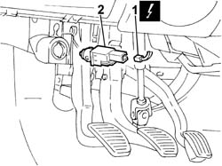

1060D42 switch on brake pedal - r+r
- Path
- Procedures > 10 ENGINE > 1060 DIESEL FUEL INJECTION > 1060D electronic diesel injection control > 1060D42 switch on brake pedal - r+r
- Kind
- repair procedure (removal / refitting; the operation number is the code)
- Applies to
- all engines; all production periods
- Interactive page
- https://sloeber94.github.io/elrnDB-fDbl/en/#/2584467
Applies to: all engines; all production periods
 Removing
Removing
 Refitting
RefittingDisconnect the battery negative terminal.
1. Disconnect the electrical connection from the switch on the clutch pedal.
 | Name | Connector |
|---|---|---|
1 | Clutch pedal switch | I31 |
2. Undo and remove the switch on the clutch pedal.

Applies to: all engines; all production periods
Refitting
RemovingFit the switch on the clutch pedal.
Connect the electrical connection
| Name | Connector |
|---|---|---|
- | Clutch pedal switch | I31 |
Connect the battery negative terminal.